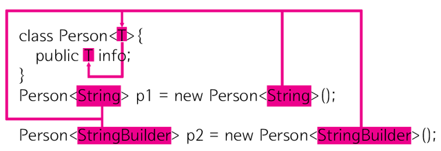

시스템 아키텍처는 일련의 소프트웨어 컴포넌트와 그 컴포넌트들을 분리하는 경계에 의해 정의된다. 가장 흔한 경계의 예들을 살펴보자.
런타임에 경계 횡단하기
: 경계 한쪽에 있는 기능에서 반대편 기능을 호출하여 데이터를 전달하는 일
적절한 위치에서 경계를 횡단하게 하는 비결은 소스코드 의존성 관리에 있다.
소스코드 모듈 하나 변경 -> 이를 의존하는 다른 소스 코드 모듈 변경 -> 재컴파일 -> 재배포
경계는 이러한 변경이 전파되는 것을 막는 방화벽을 구축하고 관리하는 수단으로써 존재한다.
두려운 단일체
아키텍터 경계 중 가장 단순하며 흔한 형태는 물리적으로 엄격하게 구분되지 않는 형태 이다.
단일 프로세서에서 같은 주소 공간을 공유
나름의 규칙에 따라 분리되 있을 뿐
소스 수준 분리 모드
배포의 관점에서 단일체는 단일 실행 파일이다.
ex ) 실행 가능한 jar 파일로 묶인 일련의 자바 클래스 파일
이처럼 배포의 관점에서 볼때 단일체의 경계는 드러나지 않지만 그 안에 포함된 다양한 컴포넌트를 개발하고, 바이너리로 만드는 과정을 독립적으로 수행할 수 있게 하는일은 대단히 가치있는 일이다.
동적 다형성 vs 정적 다형성
동적인 다형성
클래스의 상속을 통해서 하나의 타입에 서로 다른 타입을 넣어 서로 다른 타입처럼 인식되는 것을 뜻함
런타임에 인식
정적인 다형성

정적인 다형성은 타입의 이름은 같지만 옵션( < > 같은것)을 주어 같은 이름이지만 옵션에 따라 다른 타입으로 인식되는 것을 뜻한다. ex) 제네릭, 템플릿
컴파일 타임에 이루어짐
템플릿 더 알아보기 : https://thrillfighter.tistory.com/408
경계 횡단
가장 단순한 형태의 경계 횡단은 저수준 클라이언트에서 고수준 서비스로 향하는 함수 호출이다.
제어의 흐름은 왼쪽에서 오른쪽으로 경계를 횡단한다.
고수준 클라이언트가 저수준 서비스를 호출해야 한다면 동적 다형성을 사용하여 제어흐름과는 반대 방향으로 의존성을 역전시킬 수 있다. 이렇게 되면 런타임 의존성은 컴파일 타임 의존성과는 반대가 된다.
제어흐름은 왼쪽 -> 오른쪽으로 경계를 횡단한다. 고수준 Client는 Service 인터페이스를 통해 저수준 ServiceImpl의 f() 함수를 호출한다. 주목해야 할 점은 경계를 횡단할 때 의존성은 모두 오->왼쪽으로 고수준 컴포넌트를 향한다는 점이다.
정리
정적 링크된 모노리틱 구조의 실행파일일 지라도 이처럼 분리하면 프로젝트를 진행하는데 많은도움이 된다. 팀들은 독립적으로 컴포넌트를 작업하고 고수준 컴포넌트는 저수준 세부사항으로부터 독립적으로 유지된다.
단일체에서 컴포넌트 간 통신은 함수 호출에 이므로 매우 빠르고 값싸다. 때문에 소스 수준에서 결합이 분리되면 경계를 가로지르는 통신은 상당히 빈번할 수 있다.
배포형 컴포넌트
아키텍처의 경계가 물리적으로 드러나는 가장 단순한 형태는 동적 링크 라이브러리 이다.
ex) .NET, DLL, 자바 jar 등
컴포넌트를 이 형태로 배포하면 따로 컴파일 하지 않고 곧바로 사용할 수 있다. 이는 배포 수준 결합 분리 모드에 해당한다.
이는 배포 과정만 차이가 날 뿐, 배포 수준의 컴포넌트는 단일체와 동일하다. 일반적으로 모든 함수가 동일한 프로세서와 주소 공간에 위치하며 컴포넌트를 분리하거나 의존성을 관리하는 전략도 단일체와 동일하다.
단일체와 마찬가지로 컴포넌트의 경계를 가로지르는 통신은 함수호출이므로 매우 값싸다. 동적 링크와 런타임 로딩으로 인해 최초 함수 호출은 오래 걸릴 수 있지만, 대체로 이들 경계를 가로지르는 통신은 매우 빈번할 것이다.
동적 링크 vs 정적 링크
정적 링크
컴파일 시 라이브러리가 참조되어 실행 파일과 함께 만들어짐
실행파일 만들 때 라이브러리를 같이 포함시켜서 .exe파일을 만드는 것
컴파일을 하면 링커가 프로그램이 필요로 하는 부분을 라이브러리에서 찾아 실행파일에다가 바로 복사
실행 파일에 복사됨으로 라이브러리가 필요 없음 -> 메모리 많이 소모
ex) A 프로그램 안에 cout 클래스 라이브러리가 정적링크 되있다면 60명이 A프로그램 동작 시 메모리에 cout 정보 코드만 60개 존재
동적 링크
컴파일 단계에서는 라이브러리 정보만 포함
실행될 때 그 정보를 바탕으로 외부에 존재하는 라이브러리(DLL) 함수를 사용
한번 메모리에 로딩된 dll을 사용
ex) cout 이 존재하는 라이브러리를 하나만 메모리에 올린 후, 프로그램이 cout 를 호출할 때 라이브러리로 점프 한 후 실행, 다시 되돌아옴. cout 이 60개 존재하는것이 아닌 하나의 shared libraries로 존재.
정적/ 동적 링크 더 알아보기 : [https://jhnyang.tistory.com/42]
스레드

단일체와 배포형 컴포넌트는 모두 스레드를 활용할 수 있다. 스레드는 아키텍처 경계도 아니며 배포 단위도 아니다. 스레드는 실행 계획과 순서를 체계화하는 방법에 가깝다. 모든 스레드가 단 하나의 컴포넌트에 포함될 수도 있고, 많은 컴포넌트에 분산될 수 있다.
로컬 프로세스
강한 물리적 형태를 띠는 아키텍처 경계로는 로컬 프로세스가 있다. 로컬 프로세스는 주로 명령행이나 시스템 호출을 통해 생성된다. 각각의 독립된 주소 공간에서 실행되며 일반적으로는 메모리 보호를 통해 프로세스들이 메모리를 공유하지 못하게 한다.
대개의 경우 로컬 프로세스는 소켓이나 메일박스, 메세지큐와 같이 운영체제에서 제공하는 통신기능을 이용해 통신한다.
각 로컬 프로세스는 정적으로 링크된 단일체이거나 동적으로 링크된 여러개의 컴포넌트로 구성될 수 있다.
로컬 프로세스를 일종의 최상위 컴포넌트라고 생각하자. 즉 로컬 프로세스는 컴포넌트 간 의존성을 동적 다형성을 통해 관리하는 저수준 컴포넌트로 구성된다.
분리 전략
단일체나 바이너리 컴포넌트의 경우와 분리전략은 동일하다. 소스 코드 의존성의 화살표는 항상 고수준 컴포넌트를 향한다.
따라서 로컬 프로세스에서 고수준 프로세스의 소스 코드가 저수준 프로세스의 이름, 물리주소, 레즈스트리 조회 키를 절대로 포함해서는 안된다. 저수준 프로세스가 고수준 프로세스의 플러그인이 되도록 만드는 것이 아키텍처 관점의 목표이다.
통신
운영체제 호출, 데이터 마샬링 및 언마샬링, 프로세스 간 문맥 교환 등이 있다.
비싼 작업
통신이 빈번히 이뤄지지 않도록 신중히 제한
서비스
물리적인 형태를 띠는 가장 강력한 경계는 바로 서비스 이다.
서비스는 프로세스
명령행, 시스템 호출을 통해 구동
자신의 물리적 위치에 구애받지 않음
: 서로 통신하는 두 서비스는 물리적으로 동일 프로세서나 멀티코어에서 동작할 수 있고 아닐수도 있다.
모든 통신은 네트워크를 통해 이뤄짐
통신
서비스 경계를 지나는 통신은 함수 호출에 비해 매우 느리다. 따라서 빈번히 통신하는 일을 피해야 한다.
분리 전략
- 로컬 프로세스에 적용한 규칙을 동일 적용
- 저수준 서비스는 반드시 고수준 서비스에 플러그인 되어야 함
- 고수준 서비스의 소스 코드에는 저수준 서비스를 특정 짓는 어떤 물리적인 정보도 절대 포함해서는 안됨
결론
대체로 한 시스템 안에서도 통신이 빈번한 로컬 경계와 지연을 중요하게 고려해야 하는 경계가 혼합되어 있음을 의미 한다.